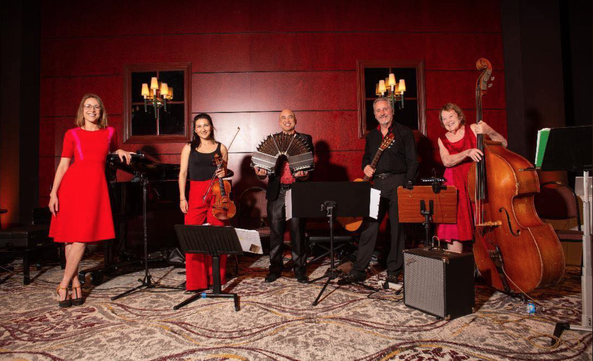

|
 |
featuring
|
|
|
Bandoneon Francis Soriano Francis' introduction to tango music started when he was
growing up: his father used to play La Cumparsita on piano. He started his foray into learning tango piano on his own in 2010,
then joined Los Angeles del Tango in 2011. His love for the music grew more and more. In 2013 he bought a bandoneon,
and started studying under Julian Hasse. Since then, he has made over 2 dozen arrangements,
and has written original tango pieces published under the name Azul y Oro, which can be found on CD Baby.
His piece "Buenos Angeles" was featured in the 2017 Tango for Musicians Workshop at Reed College.
Along with Jeff White, they performed with Joe Powers at the 2019 Hawaii Tango Marathon.
In November 2018, he performed with the Fullerton Concert Choir,
the North American debut of "Laudate Pueri" written by Argentinian composer Martin Palmieri.
He plans on more compositions, for solo bandoneon and Los Angeles del Tango. Keiko Cadby joined Los Angeles del Tango in 2011. Over the last 20 years, Keiko has played in venues worldwide, including Carnegie Hall in NY, and several locations in Japan, France, Argentina, England, Scotland, Italy, and Czech Republic; as well as in some of the largest concert halls/stadiums on the West Coast (ARCO Arena in Sacramento, Cricket Wireless in Chula Vista, HP Pavilion in San Jose, Honda Center in Anaheim, MGM in Vegas, and many others), and TV, commercials, film soundtracks, and live radio (NPR). She has performed, toured, and recorded with artists such as Jeffrey Kahane, Marco Antonio Solis, Joan Sebastian, Alejandro Fernandez, Bryce Wilson at Burning Man, Hauschka, Matt Miller of Graydon and vocalist/song-writer Melinda Ortner on her 2009 tour in Tokyo, and has won awards including the Mary Paige Phillips Award and the Command Performance Award from California Music Educator's Association of the Bay Area, and placed first in competitions including the Yen Liang Young Artist Competition in Walnut Creek, the Ruth Finley Person Etude Music Club and Santa Rosa Youth Orchestra Concerto Competitions in Northern California. She has been invited to work and learn with artists such as Pinchas Zuckerman, two-time GRAMMY®-nominee Philip Quint, and GRAMMY®-nominee Fabio Zini. Mary Ann Sereth is one of the founding members of Los Angeles del Tango. She started playing violin at age 7 and continues to play to this day! She played in many orchestras and learned classical, Irish, Scottish, English and Swedish and old time fiddle through the years. Beginning in 1968 she studied bass with renowned bassist Jennifer Leitham, mastering classical and jazz techniques. She plays weekly in a big band and two small groups who appear monthly for the public. Mary Ann credits Pablo Aslan and Pablo Motta for teaching her the Argentinean style of bass playing, which is very different from the classical style. Tango bass is her favorite of all the music and styles she plays. Olga Khokhlova Born into a family of professional musicians, Olga started her music career by playing by ear WWI and WWII songs at her grandparents’ house parties. Her professional musical education began when she went to music school at the age of 5 to study piano. At the age of 9, she started to study flute. As a pianist, she participated in a variety of classical and jazz competitions and performances on a local, state and national level. She accompanied chamber ensembles, opera singers, folk musicians, etc. Shortly after finishing music college, Olga took a break from professional musical career. Music found a way back into Olga’s life when she met the Los Angeles del Tango ensemble at a milonga in Santa Monica in 2015. Jeff White joined Los Angeles del Tango at inception in 2009. In addition to performing as guitarist Jeff also handles sound technician duties. Jeff picked up guitar just after high school and developed his playing style, incorporating many diverse influences over the years. Jeff performed with local classic rock band "Kingpin" throughout the South Bay in the 1980's and occasionally performs with the quartet "Stone Canyon Ramblers", playing modern songs in a bluegrass format. In addition to guitar, Jeff also plays mandolin and dobro. After initially becoming intrigued with Argentine tango as a dancer, Jeff started an intense study of tango music and has made 5 trips to Buenos Aires to attend workshops and immerse himself in the culture of Argentina. Jeff credits Maestro Pablo Goldstein, one of the other co-founders of Los Angeles del Tango who now resides in Buenos Aires, as a critical influence in shaping the sound of the band and helping to appreciate the true soul of Argentine tango. |